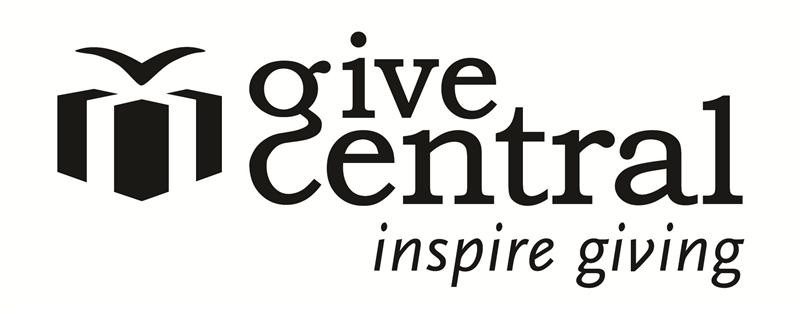

Why should I use GiveCentral?
GiveCentral is a way for donors to give easily to non-profit organizations. GiveCentral is not only convenient for you, it is the lowest cost way for a non-profit organization to collect credit card, debit card and electronic checking payments and donations online.
What does it mean to register?
By registering with GiveCentral, you are creating an online profile that you can use to make recurring donations. It takes only a few seconds longer than making a guest payment, and it means that your credit card or electronic checking account information will be securely saved so you can access it whenever you login.
How do I get started?
To set yourself up with this easy way to donate, register on the GiveCentral website. Enter 60613 in the ORGANIZATION field and St. Mary of the Lake Parish will show up.
Thank you for taking the time to sign-up up for GiveCentral!
Porque usar GiveCentral?
GiveCentral es un método fácil para donar a organizaciones no redituables. GiveCentral no es solo conveniente para usted, tiene el costo más bajo para la organización que facilita la colección online de información de tarjeta de crédito, débito y pagos de cheques electrónicos, y donaciones.
Que significa registrar?
Al registrar con GiveCentral, usted crea un perfil que puede ser usado para hacer donaciones periódicas. El registro requiere unos segundos y significa que tu información de tarjeta de crédito o cuenta electrónica será guardada seguramente para que usted tenga acceso cuando inicie una sesión.
Como empiezo?
Para empezar de usar esta manera muy fácil de donar, hay que registrar en el sitio de GiveCentral. Entre 60613 en el espacio de ORGANIZATION y nuestra parroquia (St. Mary of the Lake Parish) aparecerá.
Gracias por tomar el tiempo para registrarse en GiveCentral!